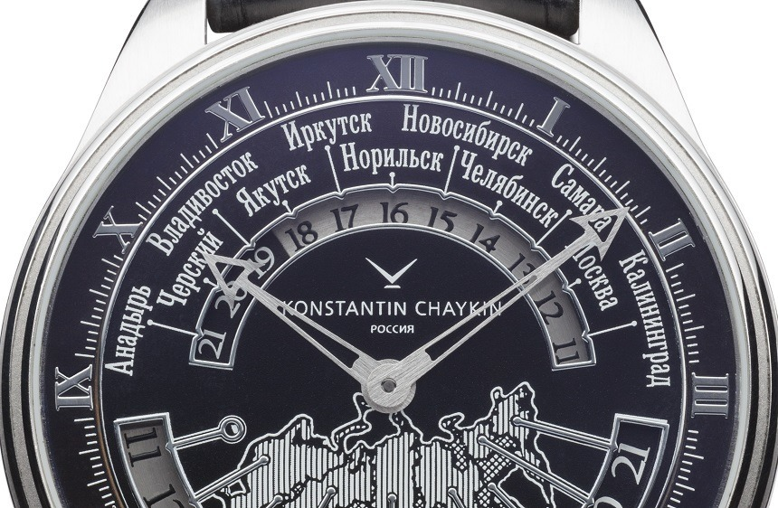
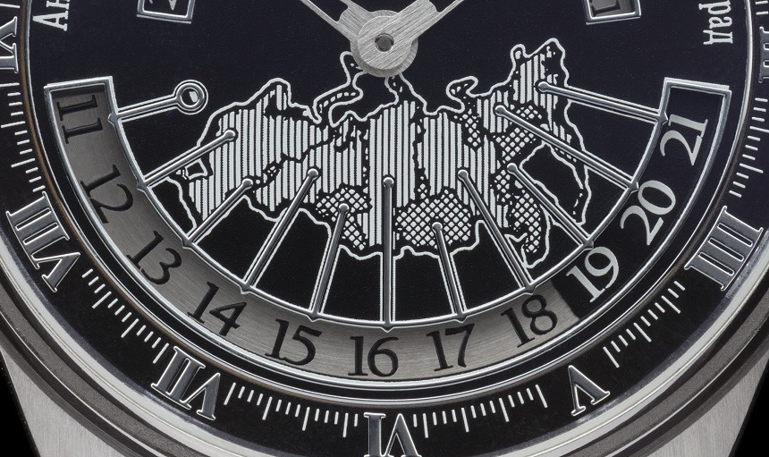

Konstantin Chaykin : Russian Time

The largest country in the world, Russia has 11 time zones -
all of which can be conveniently read on the dial of the Russian Time wristwatch
by independent watchmaker Konstantin Chaykin, best known for his spaceship
inspired Lunokhod Bulat. Each of the time zones can be read according to
city names representing each time zone, or by a map of Russia.
Central hour and minute hands on the Russian Time wristwatch show local time anywhere in Russia,
while the other 10 time zones can be conveniently read off the displays on the top or bottom half of the dial.

Chaykin's inspiration for the Russian Time wristwatch was the world time clock at
the Peterhof Palace in Saint Petersburg,
built by Russian clockmaker Ivan Yurin in the 19th century.
It features numerous sub-dials showing the time across the old Russian Empire,
including cities and time zones that are no more.
The Russian Time wristwatch is stainless steel and 44mm in diameter.
It's powered by the calibre 01-7, a manually wound movement developed in-house by Chaykin,
who manufactures most of his movements in his own workshop.
His repertoire includes complex calibres like the one that
powers the Cinema wristwatch that features a miniaturised motion picture projector.
The Konstantin Chaykin Russian Time is priced at US$13,750.